【長野一人旅 Day1】
「善光寺に栗の町"小布施"を巡る」
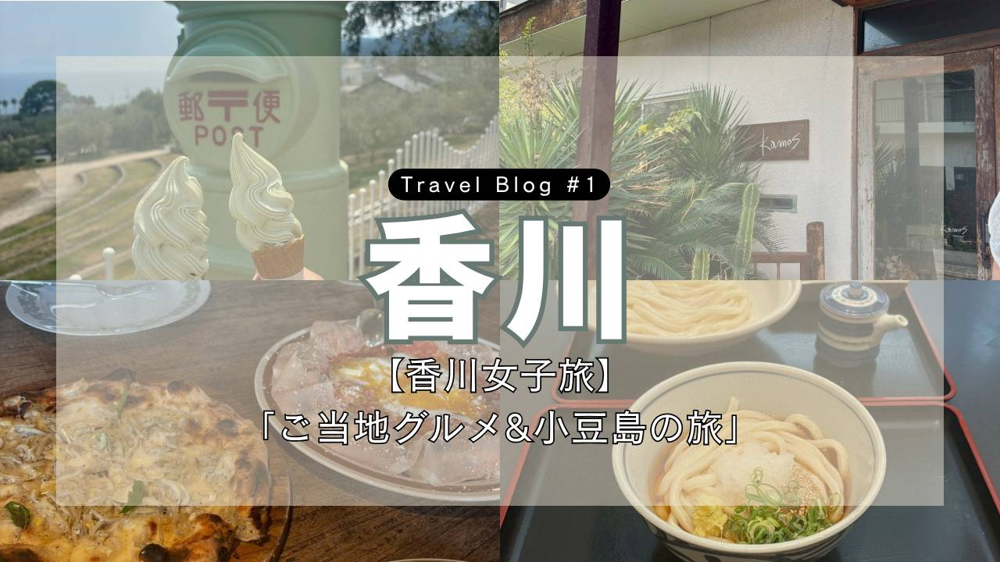
Trip Info
Place 長野県
Date 2025.09.18〜19
Transport バス・電車・車
皆様こんにちは。ミナです。
この記事は去年の夏休み中の長野弾丸旅行についてです。
実は前日にふと思い立って、急遽行くことになった究極の弾丸旅行です。
前日に急に思い立ってバスを予約し、
今回は朝早くからバスタ新宿にやってきました。
私の長所はフットワークが軽いこと。短所は無計画なところです。
バスは途中「三芳PA」と「横川PA」で休憩を挟みました。
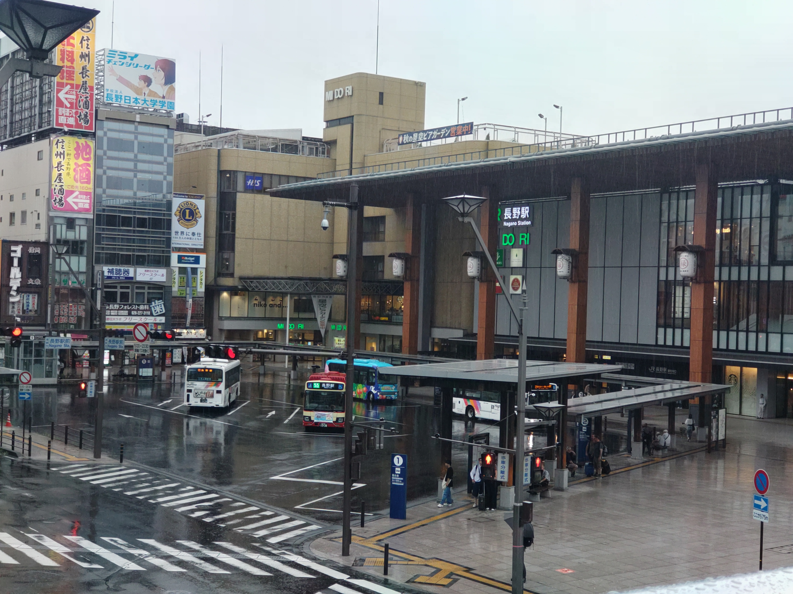
やっと着いたけれど、あいにくの雨模様。
本降りではないので、とりあえず荷物を駅のコインロッカーに預けて「善光寺」に向かうことにしました。
それにしても、思っていたより都会で驚き。

善光寺までの表参道を歩いていく途中で、バスの中でチェックしていたおやきのお店を発見したので入ってみました。
お店の手前には蒸してあるおやきが販売されていますが、その奥に入ると、店内で焼き立ての焼きおやきをいただくことができます。
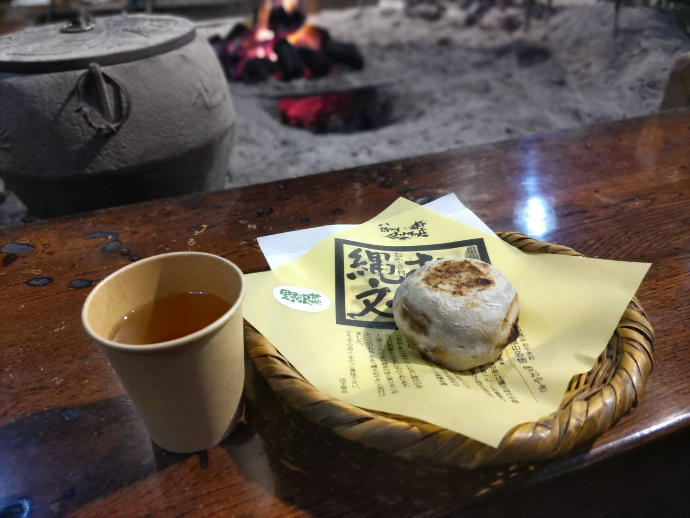
私は焼きおやき(野沢菜)〈300円〉を購入。
焼き立て熱々でとても美味しい。
目の前のいろりも風情がありますが、少しだけ熱い。
無料のそば茶もありました！
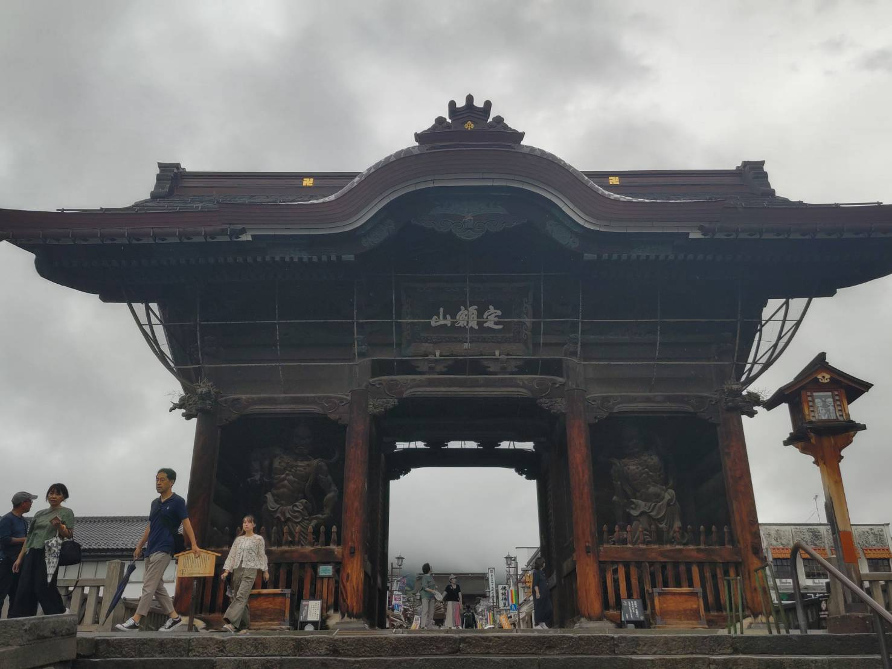
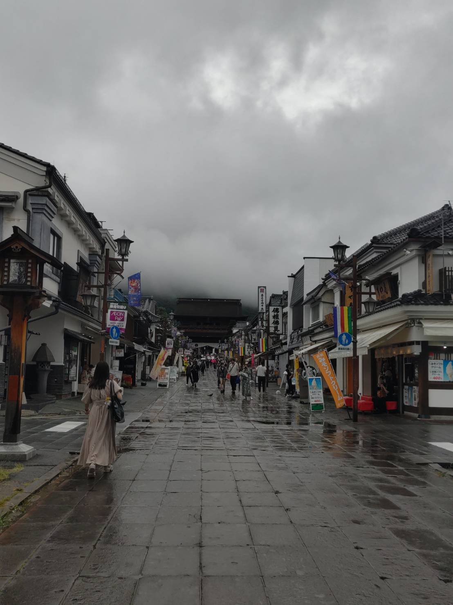
夏なのに寒さに震えながら、無事たどり着きました。
仁王門をくぐると仲見世通りがあり、様々なお店が軒を連ねています。
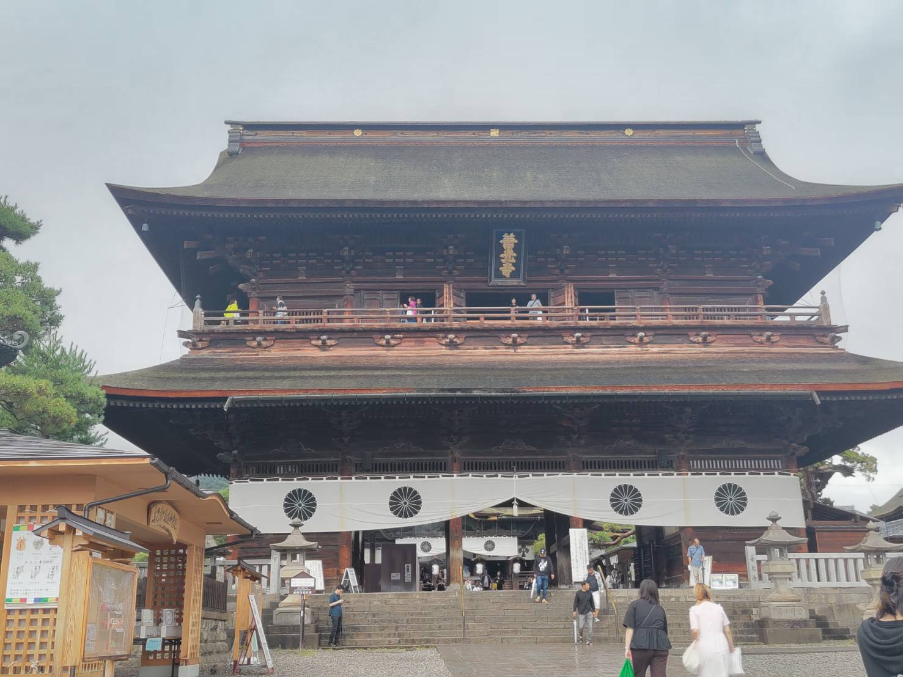
立派な山門をくぐり本殿へ。
写真は撮っていませんが、とても立派な建物でした。
ちなみにお賽銭箱がたくさんあって、どれに入れれば一番ご利益あるかな、と割と悩んでしまいました笑。煩悩の塊過ぎる。
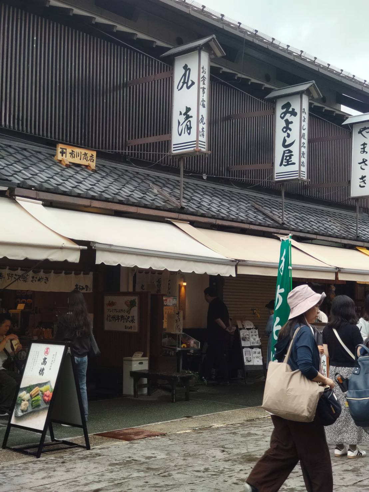
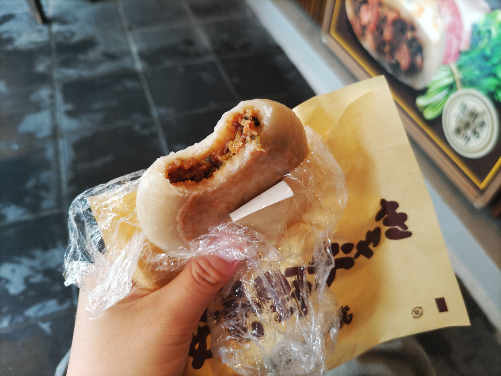
お参りが済んだので、仲見世通りでまたおやきを食べました。
さっきので完全におやきにはまっています。
あづみ堂というお店では、変わり種の蒸しおやきが多くありました。
私は信州牛野沢菜のおやき〈250円〉を購入。
お店の前のベンチでおやきを食べていると、お店のおばちゃんからここからどこへ行くのか尋ねられました。
本当に無計画な人間なので、特に当てがないことを話すと、「小布施」という町が栗が有名で「朱雀」という有名なモンブランもあると教えてくれました。
というわけで一旦ここから長野駅に戻り、電車で小布施に行くことに。
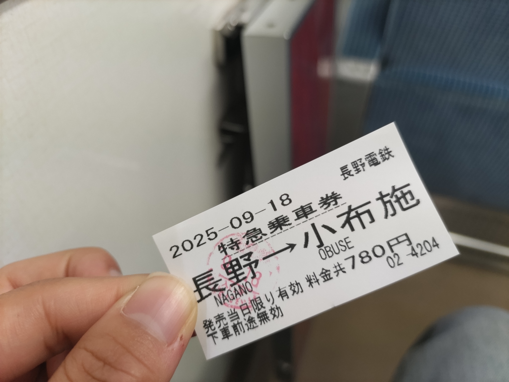
普通電車でも行けそうでしたが、今回は特急ゆけむり号を利用しました。〈特急券・・・780円〉
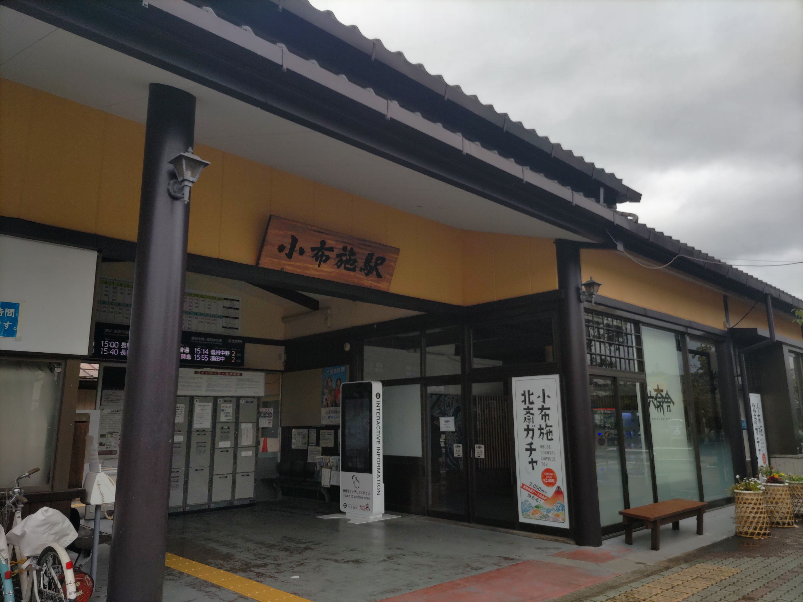
小布施に到着です！
せっかくなので栗が食べたい。特にモンブラン。
適当に町を散策していると、目の前にでかでかと栗が描かれた店頭幕を発見。そのまま中へ入ってみることに。
入ってみるとお店の方に、ここは予約が必要だと言われてしまいました。
無計画の悪い面が出てしまいました。
しょうがないので、他のお店に行こうと外に出ようとすると、なんと後ろに並んでいた男性がたまたま友達が欠席するとのことで、予約の枠を譲ってくださいました！なんという奇跡。
男性は山田さんというのですが、一緒にモンブランを食べることに。
また、私の前に並んでいた二人組の女性たちとも相席になりました。
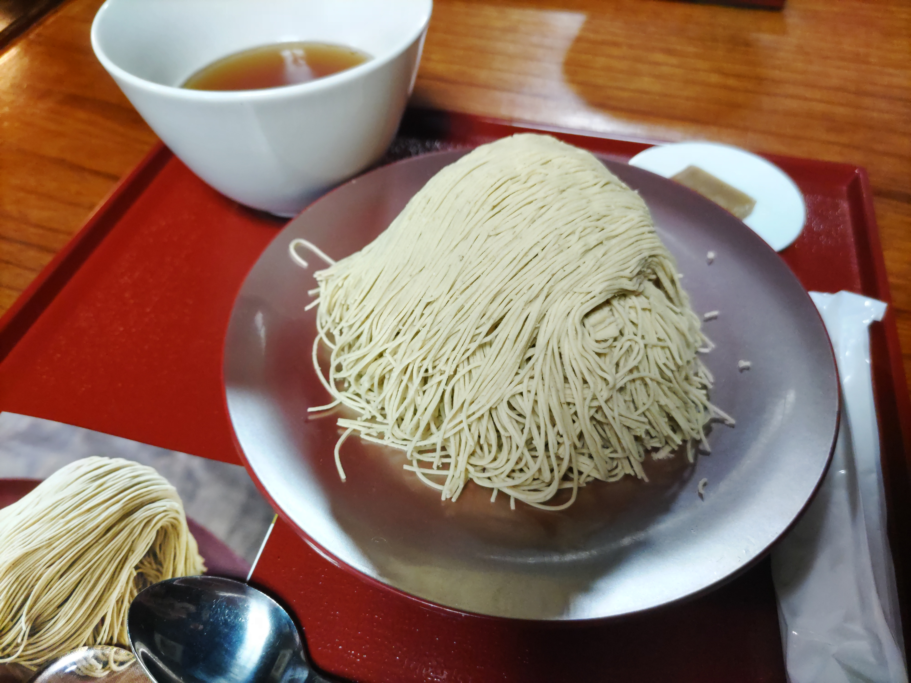
こちらが小布施堂の名物モンブラン「朱雀」です。
ここでまた奇跡。なんと仲見世のおばちゃんから聞いていたお店がここだったのです。
今日だけでとんでもない運を使い果たしてそう💦
こちらの朱雀は期間限定メニューで、数か月前から予約を取らないと通常は食べられないとのこと。
味の感想としては、とても上質なスイーツという印象です。
洋菓子というより、上質な和菓子と表現する方が適切かもしれません。
栗本来の甘さのみで作り上げているようです。本当に美味しい。
さて、このあとは意気投合した山田さんと、相席させてもらった女性たちに教えてもらった穴場スポットに向かいます！
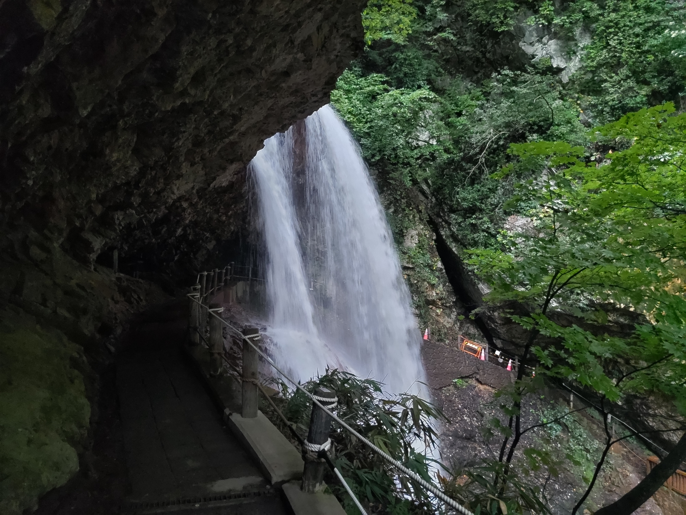
山田さんの車に乗せてもらい(良い子は初対面の人の車に乗ってはいけません！笑)、女性たちに教えてもらった雷滝というスポットにやってきました。
思っていた数倍迫力があります。
滝の裏側を通ることができ、アトラクションみたいでワクワクしました。
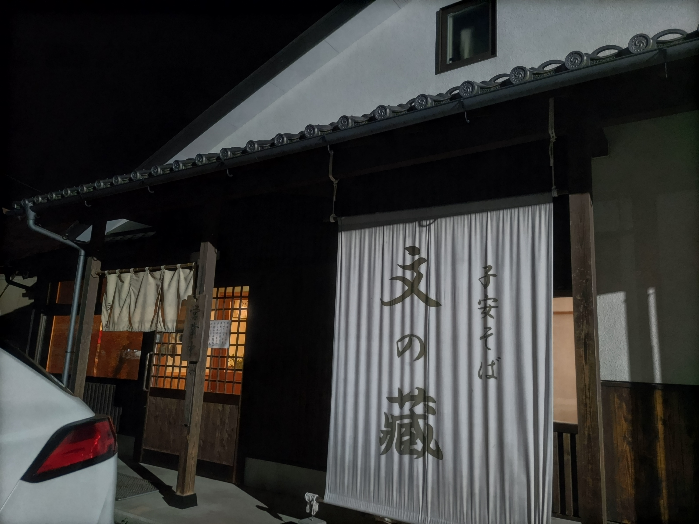
長野に来てからまだ蕎麦を食べてないと言うと、山田さんがおすすめのお蕎麦屋さんに連れてきてくれました。
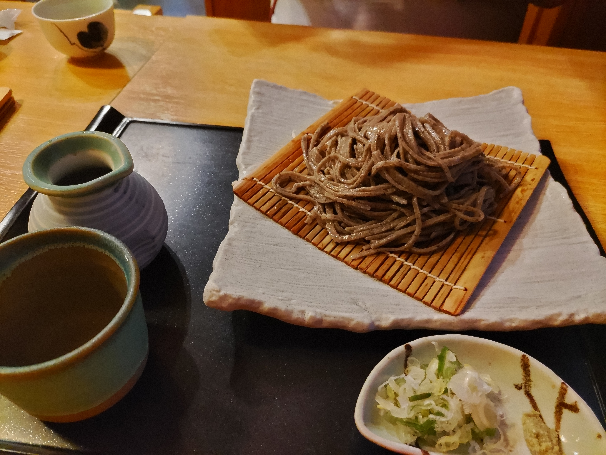
私はぶかっけそば〈970円〉を注文。
ここのお蕎麦は、蕎麦の実？のつぶつぶとした食感が残っているお蕎麦で、ダイレクトにその風味を感じることができました。
今まで食べたことのないタイプのお蕎麦で衝撃を受けました。
帰りは山田さんが長野駅まで送ってくださいました！
山田さんは長野駅でお土産を買った後、このまま帰るとのこと。
少しだけ駅構内でお土産の物色につきあい、そのまま解散しました。
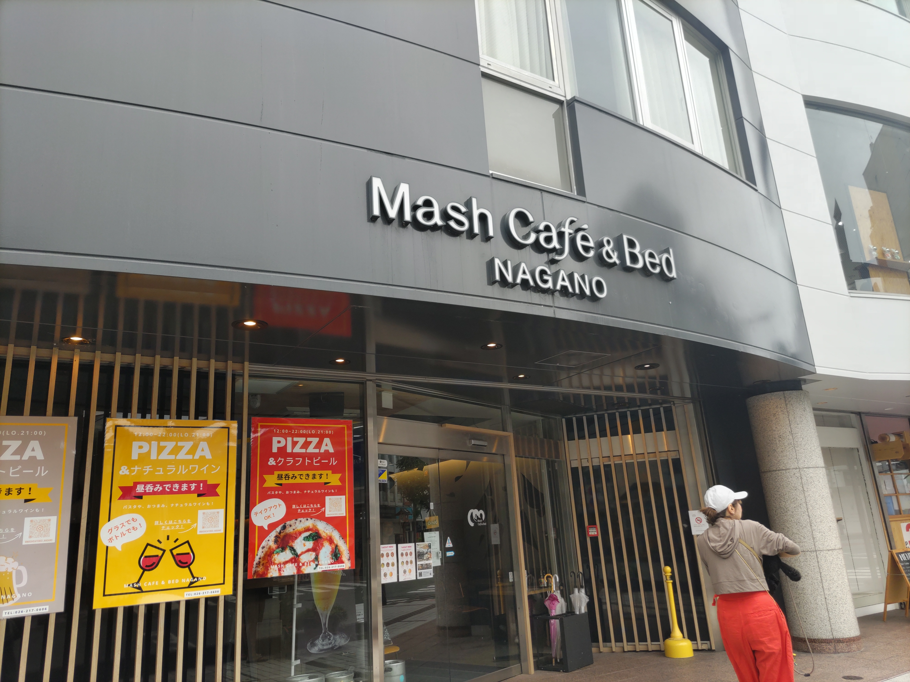
長野駅から徒歩ですぐの宿に着きました。
(上の写真は朝撮影したものです。)
今回宿泊したのは「Mash café & Bed nagano」さんです。
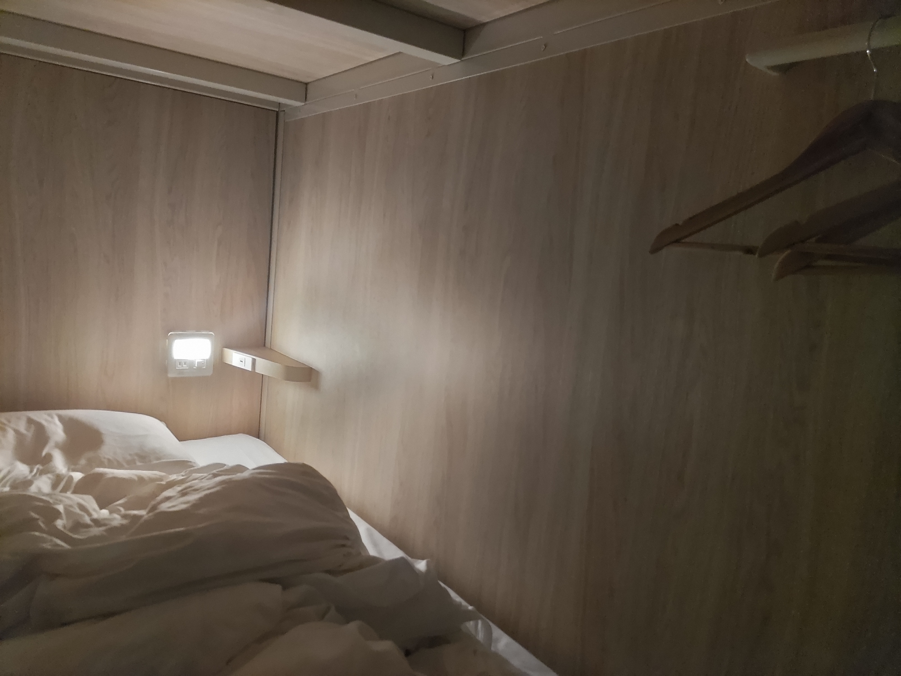
ドミトリー式の宿で、清潔な印象。シャワーもあり、オートロックで女性専用ドミトリーもあるので安心でした！
ベッドはこんな感じになっていました。
(少しくしゃくしゃですみません💦)
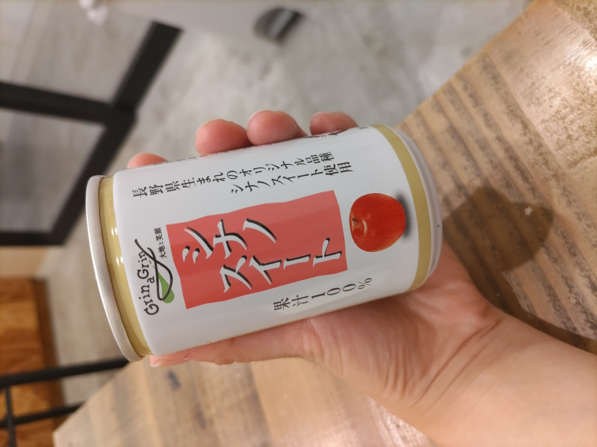
風呂キャンしたい気持ちに打ち勝ち、シャワーを浴びた後、共用スペースで旅記録ノートの執筆。
(ちなみに、こちらの記事はそのノートをブログにしているものです！)
夜のお供にシナノスイートのリンゴジュースを飲みます。
これは山田さんが奢ってくれました！何から何まで山田さんありがとうございました！
今回の旅記録は以上です。
ここまでご覧いただきありがとうございます。
次回のブログも是非見てください♪
ではまた！